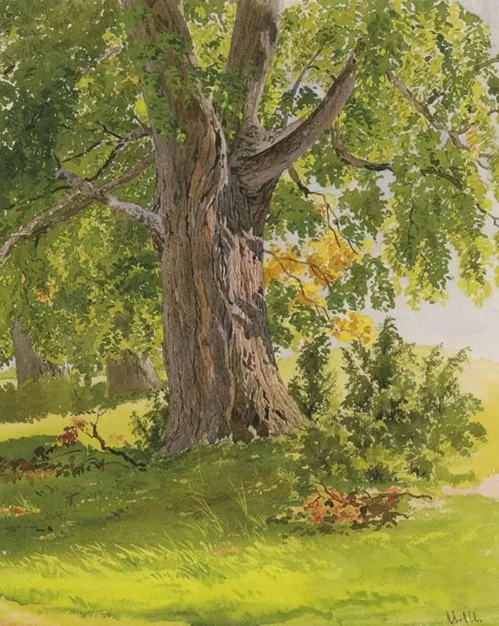
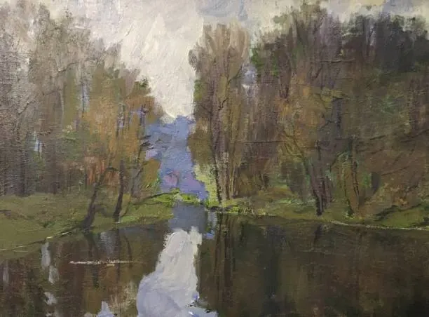

About Me
Hi, my name is Andrew! I am 19 years old and live in Michigan. Creativity and curiosity shape much of who I am, and I enjoy exploring many different ways to learn and express myself. I love reading and often find myself deep in books on history, faith, and theology. Painting and writing give me a way to slow down and share what inspires me. Hobby kits and building projects let me work with my hands, while technology and coding let me solve problems and bring new ideas to life.


Spending time outdoors is one of my favorite things. Whether I am walking through the woods, enjoying the colors of the seasons, or photographing birds and plants, nature always reminds me of God’s beauty and creativity in the world around us.